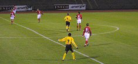

Dinsdag 11 oktober:
Jong Roda JC - Jong PSV: 1-1 Na een doelpunt van PSV in de 20e min. scoorde Diego Jongen vlak voor rust de gelijkmaker middels een penalty. Er waren ruim 200 bezoekers.
Maandag 11 oktober:
Rodameëdsje Karin
>>>
Zondag 10 oktober:
"Kritiek motiveert Sergio", de column van Tim Voncken in weekblad Parkstad
>>>
Zondag 10 oktober:
Zomaar een jubilaris uit Midden-Limburg, hoewel....
>>>
Woensdag 6 oktober:
Schitterend optreden van Dogman in Echt. Dankzij de energieke Rodasong is Echt nu geel/zwart ingekleurd op de voetballandkaart!! Danke-Bitte! Wegens groot data-verkeer is het filmpje off-line maar enkele foto's blijven beschikbaar
>>>
Woensdag 6 oktober:
Dubbelslag op L1-TV:
* Een terugblik op Kaalheide met Hens Fischer.
* Een prachtige documentaire over de mijnbouw met oud-koempels.
Enkele beelden
>>>
Maandag 4 oktober:
Franse interesse voor Kone
>>>
Zaterdag 2 oktober:
Fotoverslag FC Twente - Roda JC
>>>
NOS-verslag
>>>
Zaterdag 2 oktober:
"Ajakkes", column van Tim Voncken uit Weekblad Parkstad
>>>
Donderdag 30 september:
Alle 35 beschikbare kaarten voor Rodasupporters voor de match "
Charlton Athletic - Chelsea
" op 27 november......
UITVERKOCHT !
>>>
Dinsdag 29 september:
Heb je een Roda-hart, maak dan eens Roda-art
>>>
Zondag 26 september:
NOS-verslag Ajax - Roda JC
>>>
Woensdag 22 september:
Fotoverslag Roda JC - Excelsior
>>>
Donderdag 24 juni:
Speelschema Charlton Athletic bekend.
>>>
Vrijdag 28 mei:
Special bouw Parkstad Limburg Stadion
>>>
--------------------------------------------------------------------------
Koempels Pleasure Dome
DE multimediale site over Roda JC
Internet
:
Http://www.koempel.nl
Contact: Klik
hier
Web
koempel.nl
|
Foto's
|
Video
|
Audio
|
Overige
|
Verslagen
|
Interactief
|
Links
|